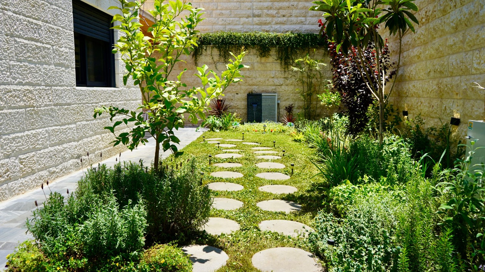

01
הגינה שלכם, רגע של שקט
פורסם באינסטגרם · פורסם בפייסבוק
ישראל דב אח יקר, הכנו לך את העדכון הזה כדי שתוכל לראות את העבודה שבוצעה, לצפות בסרטונים ולהבין בדיוק מה נעשה בהמשך. עכשיו חשוב שניפגש ונבנה יחד אסטרטגיה שתביא פניות מתאימות לעסק.

ריכזנו את התמונות ששלחת, כולל תמונות האדניות שהגיעו ב־2 באוקטובר, והכנו 12 סרטונים קצרים עם כותרות בעברית, פרטי קשר ומוזיקה עם קרדיט. הסרטונים הם אנימציות AI המבוססות על צילומי העבודות שלך; התמונות המקוריות נשמרו.
תוכן לרשתות · הוכנו גם 12 עיצובי פיד ו־12 עיצובי סטורי. בסבב התמונות הקודם נרשמו 24 פריטים באינסטגרם ובפייסבוק: בכל רשת פוסט אחד שפורסם ו־11 שתוזמנו. זהו סבב נפרד מסדרת הסרטונים.
תשתית עבודה · עמוד פייסבוק, חשבון מודעות בשקלים ופיקסל Meta הוקמו. לפני פרסום ממומן נבדוק את ההרשאות ואת קבלת הפניות בפועל. החיבור והאירועים באתר עדיין דורשים בדיקה.
| מועד מקומי | נושא הסרטון | אינסטגרם | פייסבוק |
|---|---|---|---|
| 30.09 · 18:01 | הגינה שלכם, רגע של שקט | פורסם | פורסם |
| 01.10 · 13:00 | כשהגינה נדלקת | פורסם | פורסם |
| 04.10 · 13:00 | ירוק גם בפינה קטנה | מתוזמן | מתוזמן |
| 06.10 · 13:00 | כל צעד, פינה חדשה | מתוזמן | מתוזמן |
| 08.10 · 13:00 | האור בפרטים הקטנים | מתוזמן | מתוזמן |
| 11.10 · 13:00 | מקום להיפגש בחוץ | מתוזמן | מתוזמן |
| 13.10 · 13:00 | הצמחייה עושה את האווירה | מתוזמן | מתוזמן |
| 15.10 · 13:00 | מהיום אל הערב | מתוזמן | מתוזמן |
| 18.10 · 13:00 | רגע ירוק ליד הבית | מתוזמן | מתוזמן |
| 20.10 · 13:00 | הערב מתחיל בגינה | מתוזמן | מתוזמן |
| 22.10 · 13:00 | הפרטים מתחברים לגינה | מתוזמן | מתוזמן |
| 25.10 · 13:00 | תכנון. הקמה. תאורה. | מתוזמן | מתוזמן |
זהו מצב מאומת ל־04.10.2026 · 11:52, לפי בדיקות הפרסום והתזמון. כל 12 הסרטונים נבדקו בשתי הרשתות: שניים פורסמו ועשרה מתוזמנים בכל רשת. ״מתוזמן״ מציין מועד שנרשם ברשת; הפרסום עצמו ייבדק במועד שנקבע. התאריכים מתייחסים לסדרה זו בלבד; מצב סבב התמונות תועד ב־27 בספטמבר.
תקציב הפרסום נפרד משכר השירות, וטרם הוצא ממנו כסף. ההצעה שלנו היא להשקיע אותו בקמפיין Meta אחד, שיוצג באינסטגרם ובפייסבוק ויעביר אנשים לשיחת WhatsApp עם העסק. ההפעלה תיעשה יחד, אחרי בחירת השירות והאזור ובדיקת קבלת ההודעות.
| שלב | סכום | מה עושים |
|---|---|---|
| בדיקה ראשונה כ־7 ימים | 300 ₪ | שתי בדיקות מקומיות באשדוד ובירושלים, 150 ₪ לכל אזור, עם מסר מתאים לכל אזור. נקדם שירות מרכזי אחד ונבדוק את איכות הפניות. |
| המשך לפי התוצאות כ־7 עד 14 ימים | 500 ₪ | נעביר את התקציב לאזור ולמסר שהביאו פניות רציניות במחיר שמתאים לרווח שלך. אם הבדיקה לא עובדת, נתקן לפני השקעה נוספת. |
| רזרבה מבוקרת | 200 ₪ | נשמור להארכת המהלך שעובד או לבדיקה מתוקנת. הרזרבה לא חייבת להיצרך. |
| תקרה כוללת | 1,000 ₪ | תקציב לפרסום בלבד, ללא שכר שירות נוסף בתוכנית זו. |
אדם שנמצא באזור השירות, רוצה עבודה שאתה מבצע, מספק פרטי קשר ומתעניין בהצעת מחיר. נשאל כבר בתחילת השיחה: באיזו עיר? מה רוצים לבצע? מתי? אפשר לשלוח צילום של השטח?
נמדוד את העסק: הוצאה בפועל, מספר פניות מתאימות, פגישות, הצעות מחיר ועבודות שסגרנו. בפגישה נחשב יחד כמה אפשר להשקיע בפנייה לפי הרווח מכל עבודה וסיכויי הסגירה. אין התחייבות למספר פניות או למכירות.
אנחנו מציעים פגישת עבודה של כ־45 דקות, כדי לחבר את התוכן שהכנו לשירותים שהכי כדאי לך למכור. המועד ייקבע יחד; עדיין לא נקבעה פגישה ביומן.
שירות ורווח
איזה סוג עבודה כדאי לקדם עכשיו, מה הרווח ממנו וכמה עבודות חדשות אפשר לקבל.
אשדוד וירושלים
נגדיר את אזורי השירות המדויקים, סוגי הלקוחות והמסר שמתאים לכל אזור.
מסלול הפנייה
נבדוק הודעת WhatsApp לדוגמה, מי עונה ובאילו שעות. נקבע מעקב אחרי פנייה, הצעה ועבודה שסגרנו.
תקציב והפעלה
נבחר את הסרטון והטקסט, נוודא חשבון תשלום ותקרה של 1,000 ₪ ונחליט יחד מתי מתחילים.
המשך העבודה
נסכם אחריות לכל פעולה ומועד לבדיקת התוצאות הראשונה.
שלח לנו זמן שנוח לך השבוע. נגיע עם הסרטונים, המסרים ותוכנית התקציב מוכנים לדיון.
לתיאום הפגישה עם דוד ↗לצפייה בכל הסרטונים ולהורדת העדכון: https://codenolimits.github.io/dn-nitzan-devis/suivi-0410-a51d8/
העיקרון של מודעה שמובילה ל־WhatsApp מבוסס על המדריך הרשמי של WhatsApp Business. חלוקת התקציב היא ההצעה שלנו לעסק שלך.
אנימציות AI המבוססות על צילומי העבודות שלך. סטטוס ההפצה מוצג ליד כל סרטון. צפייה כאן אינה מעידה על פרסום ברשת.
Music: “That Zen Moment” by Kevin MacLeod (incompetech.com), CC BY 4.0. Excerpts, fades and level adjustments.
פורסם באינסטגרם · פורסם בפייסבוק
פורסם באינסטגרם · פורסם בפייסבוק
מתוזמן באינסטגרם · מתוזמן בפייסבוק
מתוזמן באינסטגרם · מתוזמן בפייסבוק
מתוזמן באינסטגרם · מתוזמן בפייסבוק
מתוזמן באינסטגרם · מתוזמן בפייסבוק
מתוזמן באינסטגרם · מתוזמן בפייסבוק
מתוזמן באינסטגרם · מתוזמן בפייסבוק
מתוזמן באינסטגרם · מתוזמן בפייסבוק
מתוזמן באינסטגרם · מתוזמן בפייסבוק
מתוזמן באינסטגרם · מתוזמן בפייסבוק
מתוזמן באינסטגרם · מתוזמן בפייסבוק
ארבעה עמודים עם הביצוע, לוח הסרטונים, התקציב ופגישת העבודה.